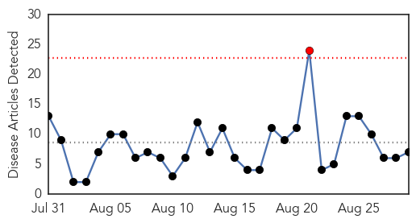
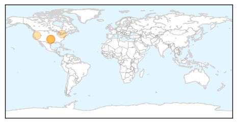
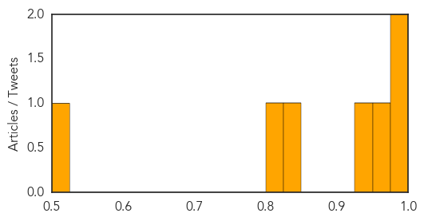
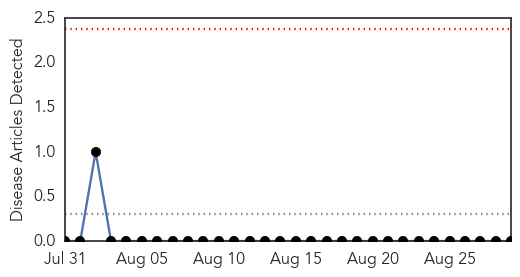

West Nile Virus
30-Day Web Trend
1 alerts, 0 warnings

30-Day Twitter Trend
0 alerts, 0 warnings

Article Locations
Article Confidences
Top Articles:
- 0.994
- KSWO, Lawton, OK- Wichita Falls, TX: News, Weather, Sports. ABC, 24/7, Telemundo -
- 0.988
- Person Infected with West Nile Virus in Sparks, Showing No Sympt
- 0.967
- Health officials: Oklahoma’s second West Nile death confirmed
- 0.934
- Peak season for West Nile
- 0.826
- Stephens County resident dies of West Nile virus
- 0.804
- EEE found in western Oneida County
- 0.520
- Washoe County identifies person infected with West Nile
Top Tweets:
-
No tweets found for Aug 29, 2015
Hemmorhagic Fever
30-Day Web Trend
0 alerts, 0 warnings

30-Day Twitter Trend
0 alerts, 0 warnings

Article Locations

Article Confidences

Top Articles:
-
No articles found for Aug 29, 2015
Top Tweets:
-
No tweets found for Aug 29, 2015